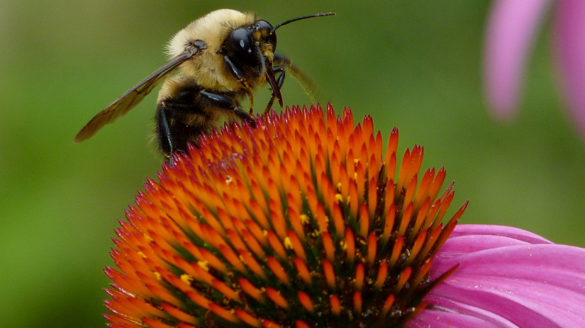
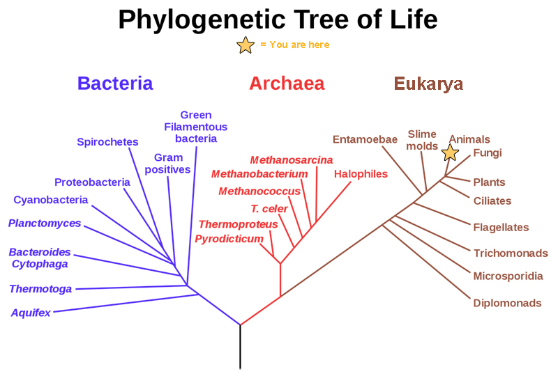
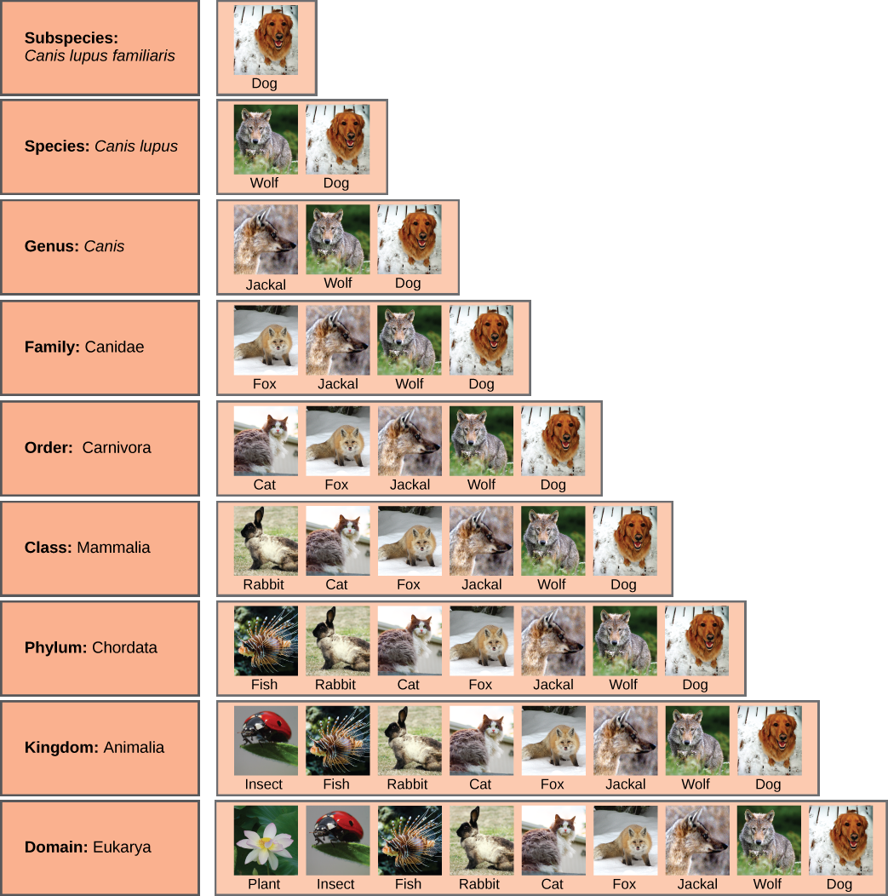
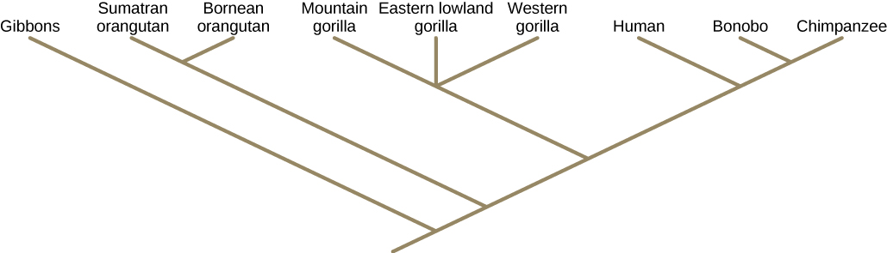
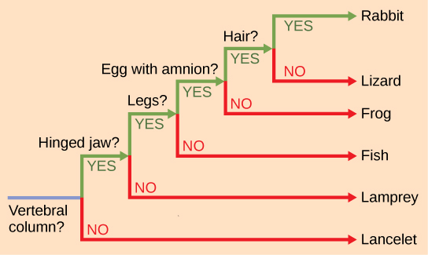
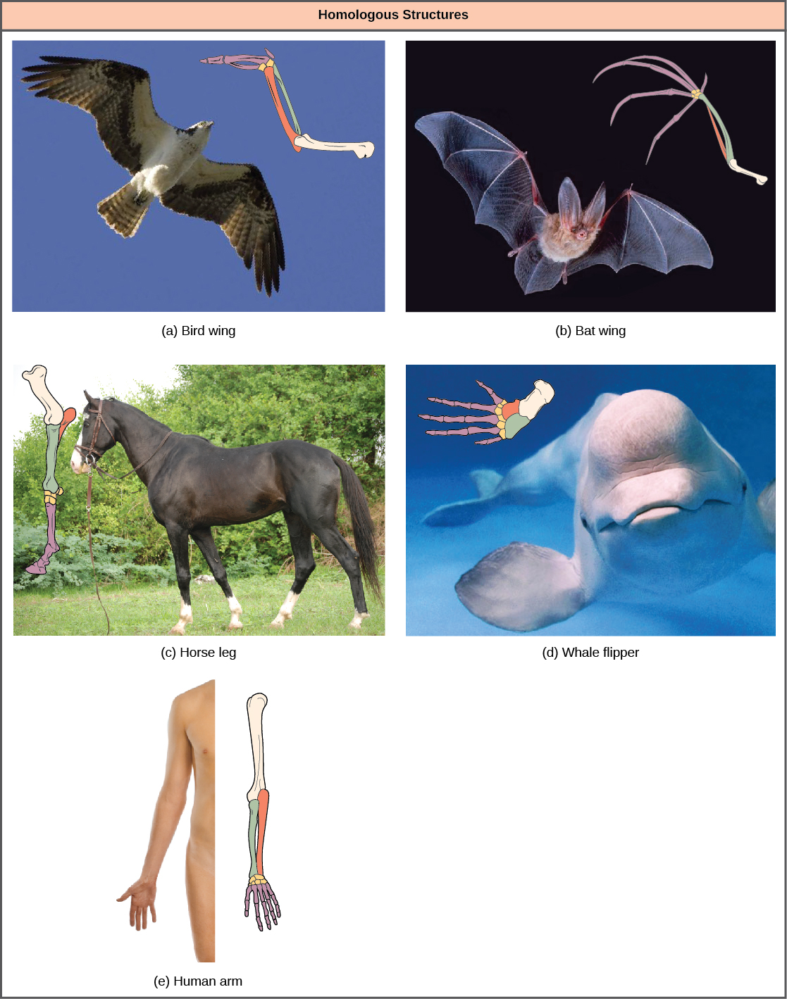
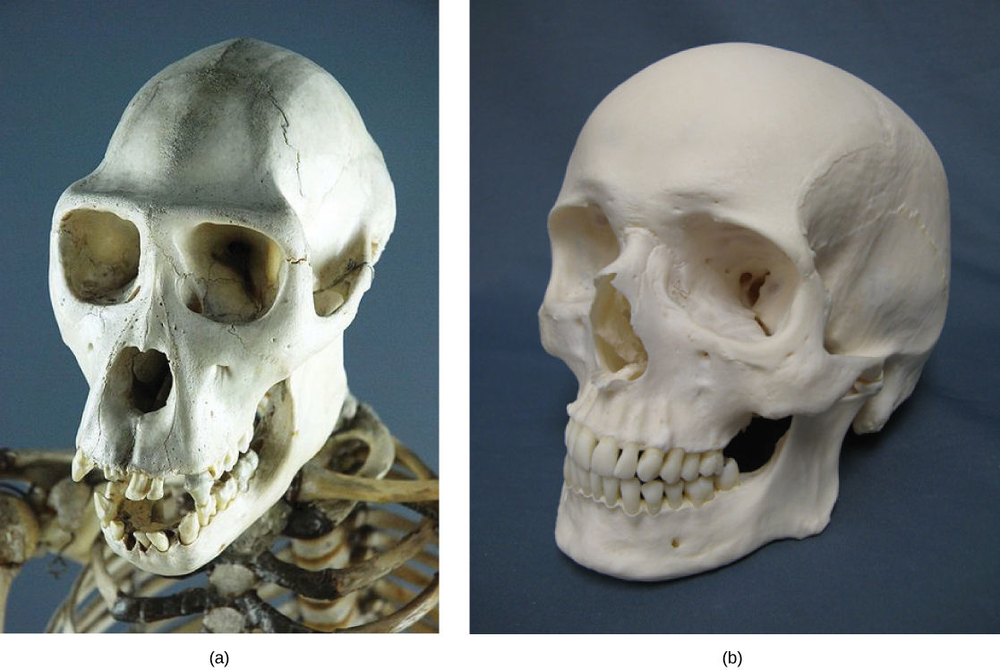
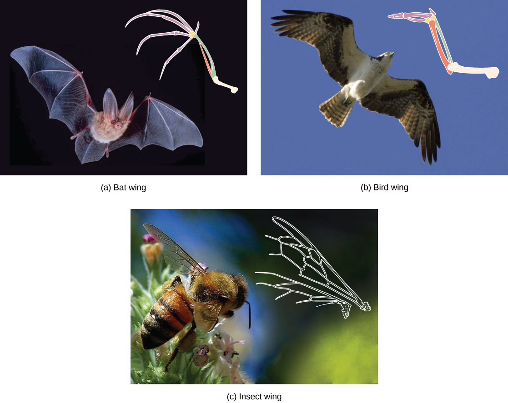
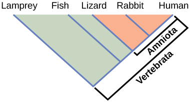

This bee and Echinacea flower could not look more different, yet they are related, as are all living organisms on Earth. By following pathways of similarities and differences—both visible and genetic—scientists seek to map the history of evolution from single-celled organisms to the tremendous diversity of creatures that have crawled, germinated, floated, swam, flown, and walked on this planet.
- Discuss the need for a comprehensive classification system
- List the different levels of the taxonomic classification system
- Describe how systematics and taxonomy relate to phylogeny
- Compare homologous and analogous traits
- Discuss the purpose of cladistics
| # | Lesson | Key Concepts | Source |
|---|---|---|---|
| 1 | Organizing Life on Earth | Phylogenetic trees, three domains (Archaea, Bacteria, Eukarya), Linnaeus & taxonomy, classification levels, binomial nomenclature, phylogenetic models, limitations of phylogenetic trees | CB 12.1 |
| 2 | Determining Evolutionary Relationships — Structures & Molecules | Homologous structures, analogous structures, misleading appearances, molecular comparisons, DNA/protein sequences | CB 12.2 (pt. 1) |
| 3 | Determining Evolutionary Relationships — Cladistics & Parsimony | Cladistics, clades, monophyletic groups, shared ancestral & derived characters, ingroups & outgroups, maximum parsimony, why phylogeny matters | CB 12.2 (pt. 2) |
| 4 | Practice Test | All topics — comprehensive assessment | All |
| Standard | Description | Lessons |
|---|---|---|
| BIO.8a | Classification of organisms using physical characteristics, body structures, and behavior | 1, 2, 3 |
| BIO.8b | How evolution contributes to the diversity of life | 1, 2, 3 |
| BIO.8c | Use of phylogenetic trees to show evolutionary relationships | 1, 2, 3 |
- Discuss the need for a comprehensive classification system
- List the different levels of the taxonomic classification system
- Describe how systematics and taxonomy relate to phylogeny
All life on Earth evolved from a common ancestor. Biologists map how organisms are related by constructing phylogenetic trees. In other words, a "tree of life" can be constructed to illustrate when different organisms evolved and to show the relationships among different organisms, as shown in Figure 12.2. Notice that from a single point, the three domains of Archaea, Bacteria, and Eukarya diverge and then branch repeatedly. The small branch that plants and animals (including humans) occupy in this diagram shows how recently these groups had their origin compared with other groups.

The phylogenetic tree in Figure 12.2 illustrates the pathway of evolutionary history. The pathway can be traced from the origin of life to any individual species by navigating through the evolutionary branches between the two points. Also, by starting with a single species and tracing backward to any branch point, the organisms related to it by various degrees of closeness can be identified.
A phylogeny is the evolutionary history and the relationships among a species or group of species. The study of organisms with the purpose of deriving their relationships is called systematics. Many disciplines within the study of biology contribute to understanding how past and present life evolved over time, and together they contribute to building, updating, and maintaining the "tree of life." Information gathered may include data collected from fossils, from studying morphology, from the structure of body parts, or from molecular structure, such as the sequence of amino acids in proteins or DNA nucleotides. By considering the trees generated by different sets of data scientists can put together the phylogeny of a species.
Scientists continue to discover new species of life on Earth as well as new character information, thus trees change as new data arrive.
Taxonomy (which literally means "arrangement law") is the science of naming and grouping species to construct an internationally shared classification system. The taxonomic classification system (also called the Linnaean system after its inventor, Carl Linnaeus, a Swedish naturalist) uses a hierarchical model. A hierarchical system has levels and each group at one of the levels includes groups at the next lowest level, so that at the lowest level each member belongs to a series of nested groups. An analogy is the nested series of directories on the main disk drive of a computer. For example, in the most inclusive grouping, scientists divide organisms into three domains: Bacteria, Archaea, and Eukarya. Within each domain is a second level called a kingdom. Each domain contains several kingdoms. Within kingdoms, the subsequent categories of increasing specificity are: phylum, class, order, family, genus, and species.
As an example, the classification levels for the domestic dog are shown in Figure 12.3. The group at each level is called a taxon (plural: taxa). In other words, for the dog, Carnivora is the taxon at the order level, Canidae is the taxon at the family level, and so forth. Organisms also have a common name that people typically use, such as domestic dog, or wolf. Each taxon name is capitalized except for species, and the genus and species names are italicized. Scientists refer to an organism by its genus and species names together, commonly called a scientific name, or Latin name. This two-name system is called binomial nomenclature. The scientific name of the wolf is therefore Canis lupus. Recent study of the DNA of domestic dogs and wolves suggest that the domestic dog is a subspecies of the wolf, not its own species, thus it is given an extra name to indicate its subspecies status, Canis lupus familiaris.

Figure 12.3 also shows how taxonomic levels move toward specificity. Notice how within the domain we find the dog grouped with the widest diversity of organisms. These include plants and other organisms not pictured, such as fungi and protists. At each sublevel, the organisms become more similar because they are more closely related. Before Darwin's theory of evolution was developed, naturalists sometimes classified organisms using arbitrary similarities, but since the theory of evolution was proposed in the 19th century, biologists work to make the classification system reflect evolutionary relationships. This means that all of the members of a taxon should have a common ancestor and be more closely related to each other than to members of other taxa.
Recent genetic analysis and other advancements have found that some earlier taxonomic classifications do not reflect actual evolutionary relationships, and therefore, changes and updates must be made as new discoveries take place. One dramatic and recent example was the breaking apart of prokaryotic species, which until the 1970s were all classified as bacteria. Their division into Archaea and Bacteria came about after the recognition that their large genetic differences warranted their separation into two of three fundamental branches of life.
Scientists use a tool called a phylogenetic tree to show the evolutionary pathways and relationships between organisms. A phylogenetic tree is a diagram used to reflect evolutionary relationships among organisms or groups of organisms. The hierarchical classification of groups nested within more inclusive groups is reflected in diagrams. Scientists consider phylogenetic trees to be a hypothesis of the evolutionary past because one cannot go back through time to confirm the proposed relationships.
Unlike with a taxonomic classification, a phylogenetic tree can be read like a map of evolutionary history, as shown in Figure 12.4. Shared characteristics are used to construct phylogenetic trees. The point where a split occurs in a tree, called a branch point, represents where a single lineage evolved into distinct new ones. Many phylogenetic trees have a single branch point at the base representing a common ancestor of all the branches in the tree. Scientists call such trees rooted, which means there is a single ancestral taxon at the base of a phylogenetic tree to which all organisms represented in the diagram descend from. When two lineages stem from the same branch point, they are called sister taxa, for example the two species of orangutans. A branch point with more than two groups illustrates a situation for which scientists have not definitively determined relationships. An example is illustrated by the three branches leading to the gorilla subspecies; their exact relationships are not yet understood. It is important to note that sister taxa share an ancestor, which does not mean that one taxon evolved from the other. The branch point, or split, represents a common ancestor that existed in the past, but that no longer exists. Humans did not evolve from chimpanzees (nor did chimpanzees evolve from humans) although they are our closest living relatives. Both humans and chimpanzees evolved from a common ancestor that lived, scientists believe, six million years ago and looked different from both modern chimpanzees and modern humans.

The branch points and the branches in phylogenetic tree structure also imply evolutionary change. Sometimes the significant character changes are identified on a branch or branch point. For example, in Figure 12.5, the branch point that gives rise to the mammal and reptile lineage from the frog lineage shows the origin of the amniotic egg character. Also the branch point that gives rise to organisms with legs is indicated at the common ancestor of mammals, reptiles, amphibians, and jawed fishes.

It is easy to assume that more closely related organisms look more alike, and while this is often the case, it is not always true. If two closely related lineages evolved under significantly different surroundings or after the evolution of a major new adaptation, they may look quite different from each other, even more so than other groups that are not as closely related. For example, the phylogenetic tree in Figure 12.5 shows that lizards and rabbits both have amniotic eggs, whereas salamanders (within the frog lineage) do not; yet on the surface, lizards and salamanders appear more similar than the lizards and rabbits.
Another aspect of phylogenetic trees is that, unless otherwise indicated, the branches do not show length of time, they show only the order in time of evolutionary events. In other words, a long branch does not necessarily mean more time passed, nor does a short branch mean less time passed— unless specified on the diagram. For example, in Figure 12.5, the tree does not indicate how much time passed between the evolution of amniotic eggs and hair. What the tree does show is the order in which things took place. Again using Figure 12.5, the tree shows that the oldest trait is the vertebral column, followed by hinged jaws, and so forth. Remember that any phylogenetic tree is a part of the greater whole, and similar to a real tree, it does not grow in only one direction after a new branch develops. So, for the organisms in Figure 12.5, just because a vertebral column evolved does not mean that invertebrate evolution ceased, it only means that a new branch formed. Also, groups that are not closely related, but evolve under similar conditions, may appear more similar to each other than to a close relative.
Describe the three domains of life and explain how a phylogenetic tree illustrates evolutionary relationships. Then list the levels of taxonomic classification from most inclusive to most specific, and explain what binomial nomenclature is using an example.
- Compare homologous and analogous traits
- Discuss the purpose of cladistics
Scientists collect information that allows them to make evolutionary connections between organisms. Similar to detective work, scientists must use evidence to uncover the facts. In the case of phylogeny, evolutionary investigations focus on two types of evidence: morphologic (form and function) and genetic.
Organisms that share similar physical features and genetic sequences tend to be more closely related than those that do not. Features that overlap both morphologically and genetically are referred to as homologous structures; the similarities stem from common evolutionary paths. For example, as shown in Figure 12.6, the bones in the wings of bats and birds, the arms of humans, and the foreleg of a horse are homologous structures. Notice the structure is not simply a single bone, but rather a grouping of several bones arranged in a similar way in each organism even though the elements of the structure may have changed shape and size.

Some organisms may be very closely related, even though a minor genetic change caused a major morphological difference to make them look quite different. For example, chimpanzees and humans, the skulls of which are shown in Figure 12.7 are very similar genetically, sharing 99 percent of their genes. However, chimpanzees and humans show considerable anatomical differences, including the degree to which the jaw protrudes in the adult and the relative lengths of our arms and legs.

However, unrelated organisms may be distantly related yet appear very much alike, usually because common adaptations to similar environmental conditions evolved in both. An example is the streamlined body shapes, the shapes of fins and appendages, and the shape of the tails in fishes and whales, which are mammals. These structures bear superficial similarity because they are adaptations to moving and maneuvering in the same environment—water. When a characteristic that is similar occurs by adaptive convergence (convergent evolution), and not because of a close evolutionary relationship, it is called an analogous structure. In another example, insects use wings to fly like bats and birds. We call them both wings because they perform the same function and have a superficially similar form, but the embryonic origin of the two wings is completely different. The difference in the development, or embryogenesis, of the wings in each case is a signal that insects and bats or birds do not share a common ancestor that had a wing. The wing structures, shown in Figure 12.8 evolved independently in the two lineages.
Similar traits can be either homologous or analogous. Homologous traits share an evolutionary path that led to the development of that trait, and analogous traits do not. Scientists must determine which type of similarity a feature exhibits to decipher the phylogeny of the organisms being studied.

With the advancement of DNA technology, the area of molecular systematics, which describes the use of information on the molecular level including DNA sequencing, has blossomed. New analysis of molecular characters not only confirms many earlier classifications, but also uncovers previously made errors. Molecular characters can include differences in the amino-acid sequence of a protein, differences in the individual nucleotide sequence of a gene, or differences in the arrangements of genes. Phylogenies based on molecular characters assume that the more similar the sequences are in two organisms, the more closely related they are. Different genes change evolutionarily at different rates and this affects the level at which they are useful at identifying relationships. Rapidly evolving sequences are useful for determining the relationships among closely related species. More slowly evolving sequences are useful for determining the relationships between distantly related species. To determine the relationships between very different species such as Eukarya and Archaea, the genes used must be very ancient, slowly evolving genes that are present in both groups, such as the genes for ribosomal RNA. Comparing phylogenetic trees using different sequences and finding them similar helps to build confidence in the inferred relationships.
Sometimes two segments of DNA in distantly related organisms randomly share a high percentage of bases in the same locations, causing these organisms to appear closely related when they are not. For example, the fruit fly shares 60 percent of its DNA with humans. In this situation, computer-based statistical algorithms have been developed to help identify the actual relationships, and ultimately, the coupled use of both morphologic and molecular information is more effective in determining phylogeny.
Explain the difference between homologous and analogous structures using specific examples from the text. Then describe how molecular comparisons (DNA and protein sequences) are used to determine evolutionary relationships, and explain why scientists must use both morphologic and molecular information.
- Discuss the purpose of cladistics
- Describe how shared derived characters are used to build cladograms
- Explain maximum parsimony and its role in choosing phylogenetic trees
How do scientists construct phylogenetic trees? Presently, the most accepted method for constructing phylogenetic trees is a method called cladistics. This method sorts organisms into clades, groups of organisms that are most closely related to each other and the ancestor from which they descended. For example, in Figure 12.9, all of the organisms in the shaded region evolved from a single ancestor that had amniotic eggs. Consequently, all of these organisms also have amniotic eggs and make a single clade, also called a monophyletic group. Clades must include the ancestral species and all of the descendants from a branch point.

Which animals in this figure belong to a clade that includes animals with hair? Which evolved first: hair or the amniotic egg?
Clades can vary in size depending on which branch point is being referenced. The important factor is that all of the organisms in the clade or monophyletic group stem from a single point on the tree. This can be remembered because monophyletic breaks down into "mono," meaning one, and "phyletic," meaning evolutionary relationship.
Cladistics rests on three assumptions. The first is that living things are related by descent from a common ancestor, which is a general assumption of evolution. The second is that speciation occurs by splits of one species into two, never more than two at a time, and essentially at one point in time. This is somewhat controversial, but is acceptable to most biologists as a simplification. The third assumption is that traits change enough over time to be considered to be in a different state .It is also assumed that one can identify the actual direction of change for a state. In other words, we assume that an amniotic egg is a later character state than non-amniotic eggs. This is called the polarity of the character change. We know this by reference to a group outside the clade: for example, insects have non-amniotic eggs; therefore, this is the older or ancestral character state. Cladistics compares ingroups and outgroups. An ingroup (lizard, rabbit and human in our example) is the group of taxa being analyzed. An outgroup (lancelet, lamprey and fish in our example) is a species or group of species that diverged before the lineage containing the group(s) of interest. By comparing ingroup members to each other and to the outgroup members, we can determine which characteristics are evolutionary modifications determining the branch points of the ingroup's phylogeny.
If a characteristic is found in all of the members of a group, it is a shared ancestral character because there has been no change in the trait during the descent of each of the members of the clade. Although these traits appear interesting because they unify the clade, in cladistics they are considered not helpful when we are trying to determine the relationships of the members of the clade because every member is the same. In contrast, consider the amniotic egg characteristic of Figure 12.9. Only some of the organisms have this trait, and to those that do, it is called a shared derived character because this trait changed at some point during descent. This character does tell us about the relationships among the members of the clade; it tells us that lizards, rabbits, and humans group more closely together than any of these organisms do with fish, lampreys, and lancelets.
A sometimes confusing aspect of "ancestral" and "derived" characters is that these terms are relative. The same trait could be either ancestral or derived depending on the diagram being used and the organisms being compared. Scientists find these terms useful when distinguishing between clades during the building of phylogenetic trees, but it is important to remember that their meaning depends on context.
Constructing a phylogenetic tree, or cladogram, from the character data is a monumental task that is usually left up to a computer. The computer draws a tree such that all of the clades share the same list of derived characters. But there are other decisions to be made, for example, what if a species presence in a clade is supported by all of the shared derived characters for that clade except one? One conclusion is that the trait evolved in the ancestor, but then changed back in that one species. Also a character state that appears in two clades must be assumed to have evolved independently in those clades. These inconsistencies are common in trees drawn from character data and complicate the decision-making process about which tree most closely represents the real relationships among the taxa.
To aid in the tremendous task of choosing the best tree, scientists often use a concept called maximum parsimony, which means that events occurred in the simplest, most obvious way. This means that the "best" tree is the one with the fewest number of character reversals, the fewest number of independent character changes, and the fewest number of character changes throughout the tree. Computer programs search through all of the possible trees to find the small number of trees with the simplest evolutionary pathways. Starting with all of the homologous traits in a group of organisms, scientists can determine the order of evolutionary events of which those traits occurred that is the most obvious and simple.
These tools and concepts are only a few of the strategies scientists use to tackle the task of revealing the evolutionary history of life on Earth. Recently, newer technologies have uncovered surprising discoveries with unexpected relationships, such as the fact that people seem to be more closely related to fungi than fungi are to plants. Sound unbelievable? As the information about DNA sequences grows, scientists will become closer to mapping the evolutionary history of all life on Earth.
Explain how scientists use cladistics to build phylogenetic trees. In your response, describe the role of shared derived characters (synapomorphies), the difference between ingroups and outgroups, and how maximum parsimony helps scientists choose the best tree. Use the amniotic egg example from Figure 12.9 to illustrate your answer.
- Organizing life on Earth (three domains, taxonomy levels, binomial nomenclature, phylogenetic trees, Linnaeus) — CB 12.1
- Determining evolutionary relationships (homologous vs analogous structures, molecular evidence, cladistics, shared derived characters, maximum parsimony, outgroups) — CB 12.2